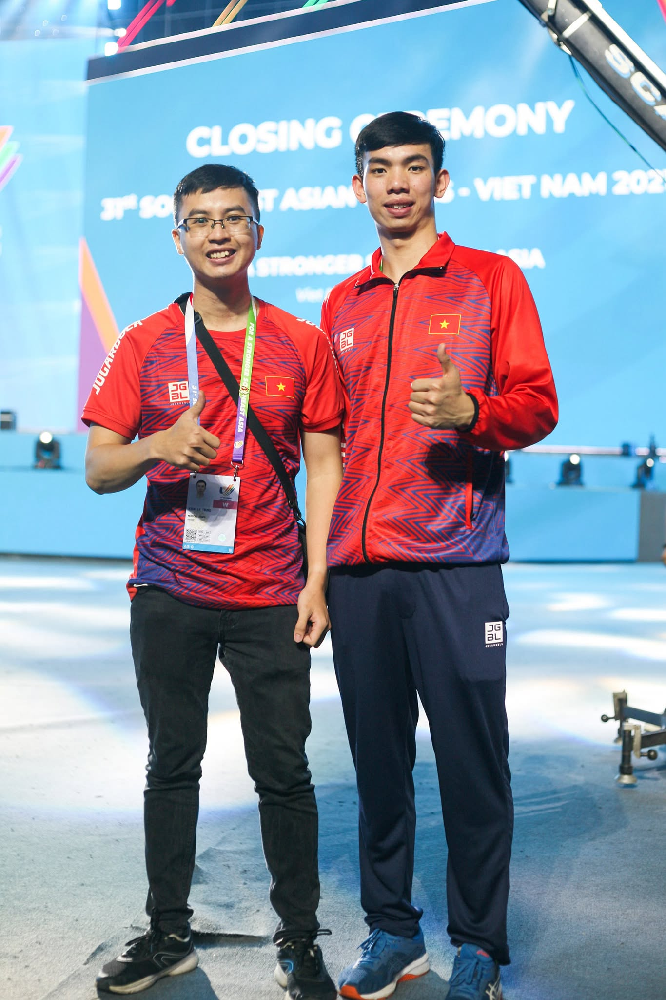
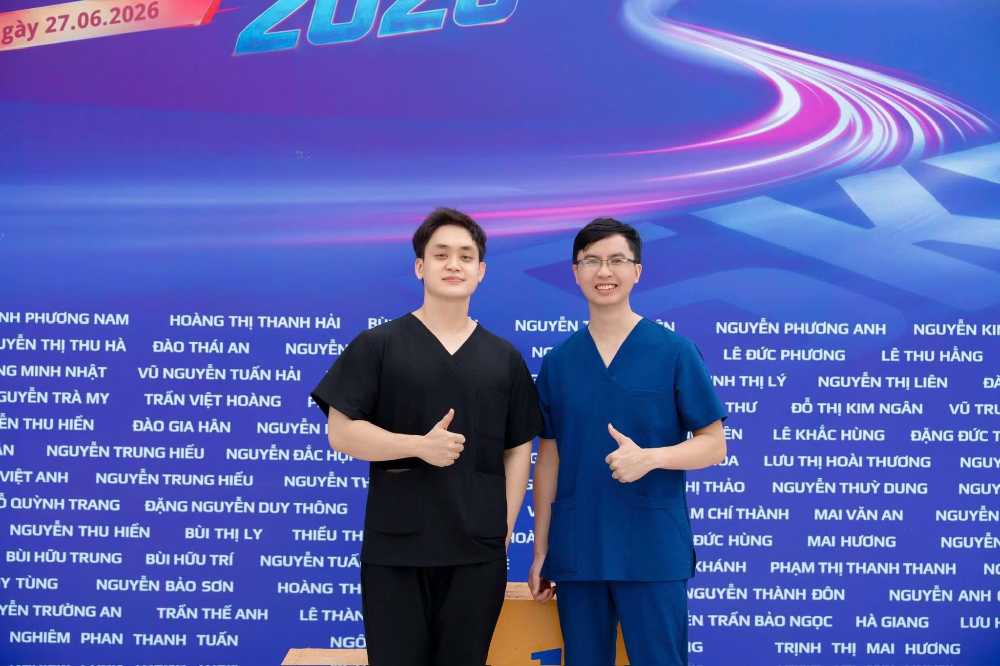
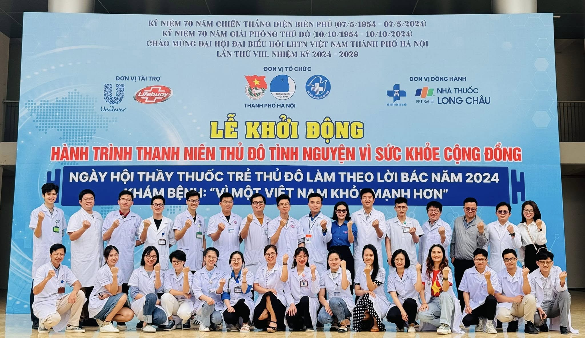
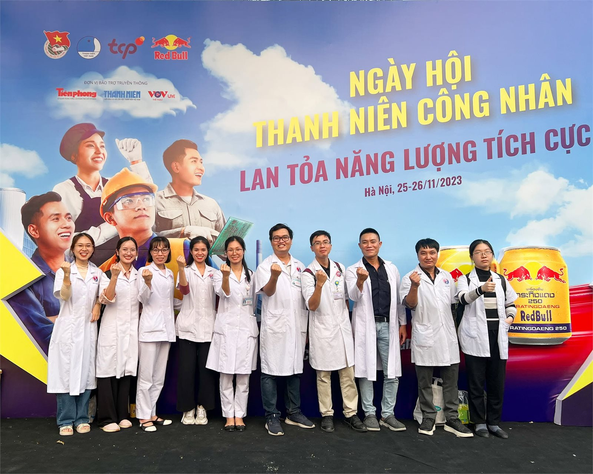
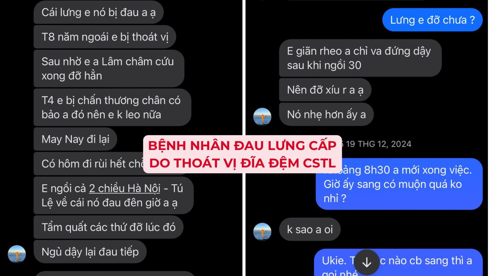
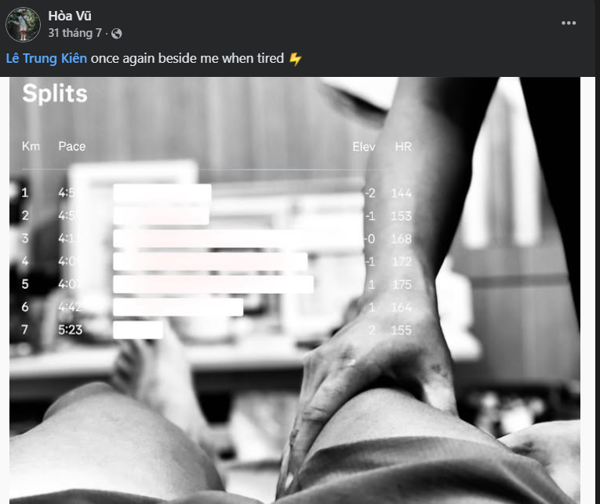

Điều trị tận gốc,
vận động bền vững
Mình là Lê Trung Kiên — bác sĩ Y học cổ truyền và cũng là một runner. Mình giúp bạn hiểu đúng về cơn đau, điều trị vào nguyên nhân gốc rễ, và quay lại vận động một cách an toàn, bền vững.
Giờ đón khách
- Thứ 2 – Thứ 617h30 – 19h30
- Thứ 7 – CN9h00 – 17h00
Địa chỉ
Ngõ 8, Ngô Quyền, Hà Đông, Hà Nội

Lễ tốt nghiệp Thạc sĩ Y học cổ truyền — Đại học Y Hà Nội, 04/2026
Giới thiệu
Về bác sĩ Lê Trung Kiên
Mình là Lê Trung Kiên, một bác sĩ Y học cổ truyền cũng là một runner, với mục tiêu giúp bệnh nhân hiểu đúng về cơn đau, điều trị vào nguyên nhân gốc rễ và quay lại vận động một cách an toàn, bền vững.
Bên cạnh công việc khám chữa bệnh hàng ngày tại bệnh viện, mình dành nhiều thời gian nghiên cứu và đồng hành cùng những người yêu thể thao — từ chạy bộ, bóng đá đến các môn vận động khác — để phòng ngừa và phục hồi chấn thương cơ xương khớp bằng châm cứu, vật lý trị liệu kết hợp y học cổ truyền.
Chuyên môn
Các lĩnh vực điều trị
Châm cứu cổ truyền
Điện châm, hào châm kết hợp y học cổ truyền trong điều trị đau và phục hồi chức năng.
Đau cơ xương khớp
Đau cổ vai gáy, đau lưng, thoát vị đĩa đệm, viêm gân — điều trị vào đúng nguyên nhân.
Chấn thương thể thao
Phục hồi chấn thương khi tập luyện, thi đấu — bóng đá, chạy bộ và nhiều môn thể thao khác.
Siêu âm chẩn đoán
Siêu âm cơ xương khớp và siêu âm tổng quát hỗ trợ chẩn đoán chính xác.
Phòng ngừa chấn thương
Tư vấn kế hoạch tập luyện, phòng tránh chấn thương trước khi xảy ra.
Vật lý trị liệu
Phục hồi chức năng sau chấn thương, sau phẫu thuật với lộ trình cá nhân hóa.
Kinh nghiệm & học vấn
Quá trình công tác và đào tạo
Quá trình công tác
- Bác sĩ, Bệnh viện Đa khoa Y học cổ truyền Hà Nội (2020 – nay)
- Thư ký Ban chủ nhiệm Chuyên khoa đầu ngành Y học cổ truyền — Sở Y tế Hà Nội (từ 6/2026)
- Thành viên Hội Đông y Hà Nội
- Thành viên Hội Châm cứu Hà Nội
- Thành viên Hội Châm cứu Việt Nam
- Thành viên Hội Vật lý trị liệu Việt Nam
Học tập & nghiên cứu
- Thạc sĩ Y học cổ truyền — Đại học Y Hà Nội (2025)
- Bác sĩ Y học cổ truyền — Học viện Y Dược học cổ truyền Việt Nam (2018)
- Chứng chỉ hành nghề khám chữa bệnh — Sở Y tế Hà Nội (2022)
- Chứng chỉ Định hướng chuyên khoa Nội — Đại học Y Hà Nội (2019)
- Chứng chỉ Sư phạm Y học — Đại học Y Hà Nội (2025)
- Chứng chỉ Nghiệp vụ sư phạm Đại học, Cao đẳng — Đại học Sư phạm Hà Nội 2 (2025)
- Chứng chỉ Siêu âm cơ xương khớp & Siêu âm tổng quát — Đại học Y Hải Phòng (2025)





Thế mạnh riêng
Bác sĩ đồng hành cùng người chơi thể thao
Bản thân cũng là người yêu vận động, mình hiểu rõ những chấn thương hay gặp khi tập luyện và thi đấu thể thao — từ chạy bộ, bóng đá đến các môn vận động khác: đau cổ chân, viêm gân, đau lưng do quá tải, thoát vị đĩa đệm... Nhờ vậy, mình có thể tư vấn và điều trị sát với thực tế tập luyện, không chỉ dựa trên lý thuyết.
- Khám và tư vấn phòng ngừa chấn thương khi tập luyện, thi đấu
- Sơ cứu và xử trí chấn thương ngay tại sân tập, sân thi đấu
- Châm cứu, vật lý trị liệu phục hồi sau chấn thương thể thao
- Đồng hành cùng nhiều CLB thể thao tại Hà Nội, từ chạy bộ (HaDong Runners) đến bóng đá phong trào





Vì cộng đồng
Bác sĩ vì sức khỏe cộng đồng
Ngoài công việc tại bệnh viện, mình tích cực tham gia các hoạt động vì sức khỏe cộng đồng — từ tập huấn sơ cấp cứu, khám bệnh miễn phí, đến chia sẻ kiến thức chăm sóc sức khỏe cho nhiều đối tượng khác nhau.
- Tập huấn sơ cấp cứu, phòng tránh tai nạn thương tích ở trẻ em
- Khám sức khỏe miễn phí cho người dân
- Chăm sóc sức khỏe cho người lao động, công nhân
- Chia sẻ kiến thức chăm sóc cột sống cho người lao động văn phòng
Bệnh nhân nói gì
Chia sẻ từ người bệnh & runner







Liệt VII ngoại biên sau phẫu thuật u não
Hình ảnh trước và sau một liệu trình điều trị phục hồi (11/08/2025 → 03/09/2025), được chia sẻ với sự đồng ý của bệnh nhân.
Ghi nhận
Giải thưởng & chứng nhận


Trên báo chí
Chia sẻ chuyên môn & nghiên cứu khoa học
Liên hệ
Đặt lịch thăm khám
Nếu bạn đang gặp vấn đề về đau cơ xương khớp, chấn thương khi tập luyện, hoặc muốn tìm hiểu về châm cứu & y học cổ truyền, hãy nhắn tin cho mình qua Zalo.
Địa chỉ
Ngõ 8, Ngô Quyền, Hà Đông, Hà Nội
Giờ làm việc
T2–T6: 17h30–19h30 · T7–CN: 9h00–17h00